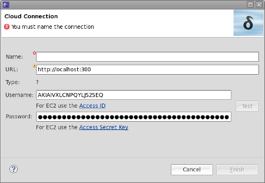
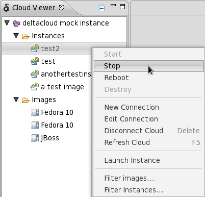
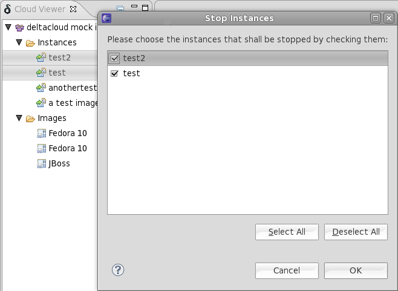
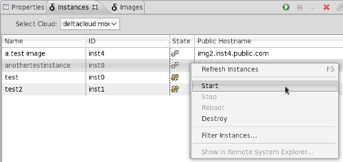

General
Related Jiras:
JBIDE-7401,
JBIDE-7259,
JBIDE-7437,

Related Jiras:
JBIDE-7305,
JBIDE-7284,
JBIDE-7483,
JBIDE-7482,
JBIDE-7260,
JBIDE-7485,
JBIDE-7317,
JBIDE-7407,
JBIDE-7403,
JBIDE-7360,
JBIDE-7696,
JBIDE-7411,
JBIDE-7404

Related Jiras:JBIDE-7479, JBIDE-7183, JBIDE-7367, JBIDE-7329, JBIDE-7307, JBIDE-7479
You may now also select several entries in the cloud viewer and choose an action to apply on them

Related Jiras: JBIDE-7326, JBIDE-7306, JBIDE-7618, JBIDE-7502 JBIDE-7501, JBIDE-7499, JBIDE-7498
You may now also notice faster startup times since we delayed loading operations to when they're really needed.
The views now refresh immediately as soon as you change any setting to a cloud connection. You don't need to refresh the views any more.
Related Jiras:
JBIDE-7396,
JBIDE-7518
Any errors that occur while interacting with the server are now reported in a user friendly manner.

Related Jiras:
JBIDE-7663,
JBIDE-7586,
JBIDE-7459
We unfortunately had a bug in Beta1 that made credentials mix up if you had two connections to the same cloud. We fixed this for Beta2.
Related Jiras:JBIDE-7625
JBIDE-7523, JBIDE-7366
There was an issue that prevented the Remote System Explorer to work with instances that run on EC2. This issue was fixed in Beta2.
We removed the local view menu and put all actions to the context menu so that it better matches what eclipse users may expect. You can now select multiple instances and operate on them. The actions now behave exactly as they do in the cloud view. We also changed the icons and now display instance states by icons instead of plain text.

Related Jiras:
JBIDE-7194,
JBIDE-7678,
JBIDE-7663,
JBIDE-7516,
JBIDE-7507,
JBIDE-7194,
JBIDE-7549,
JBIDE-7503